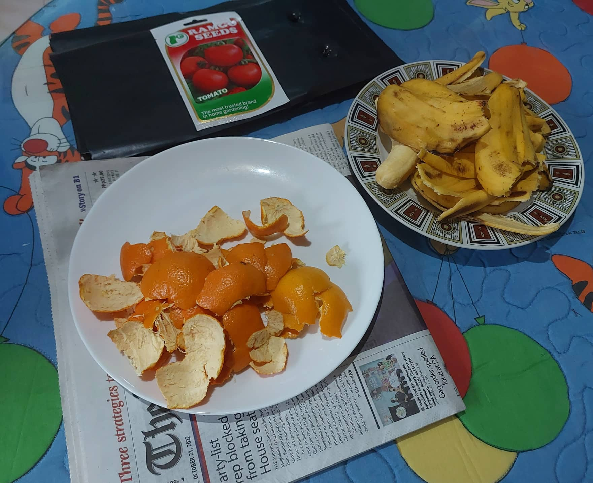
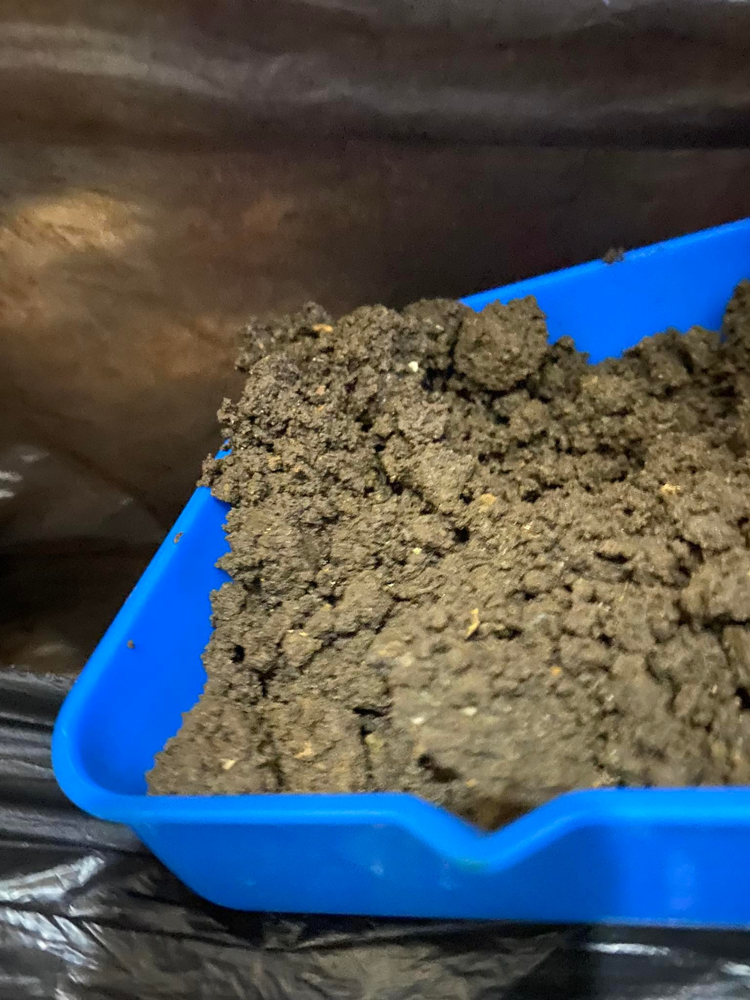
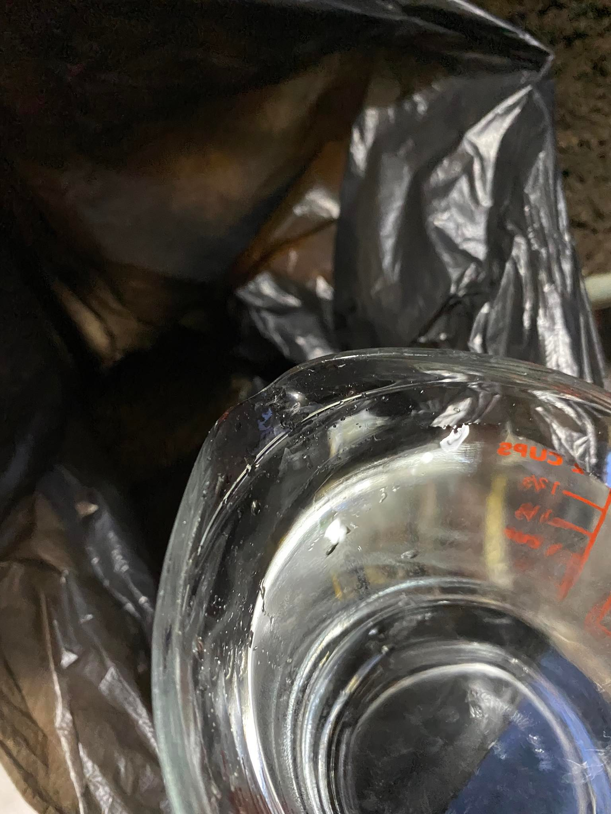
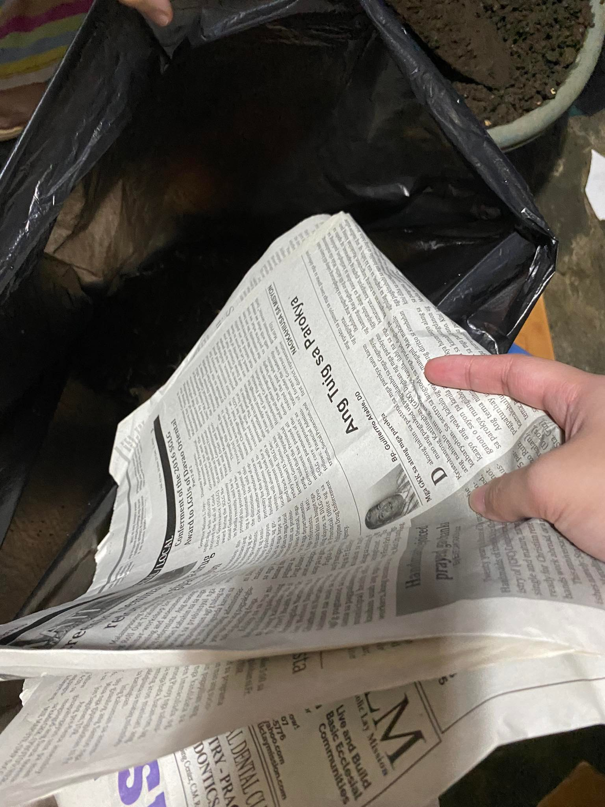
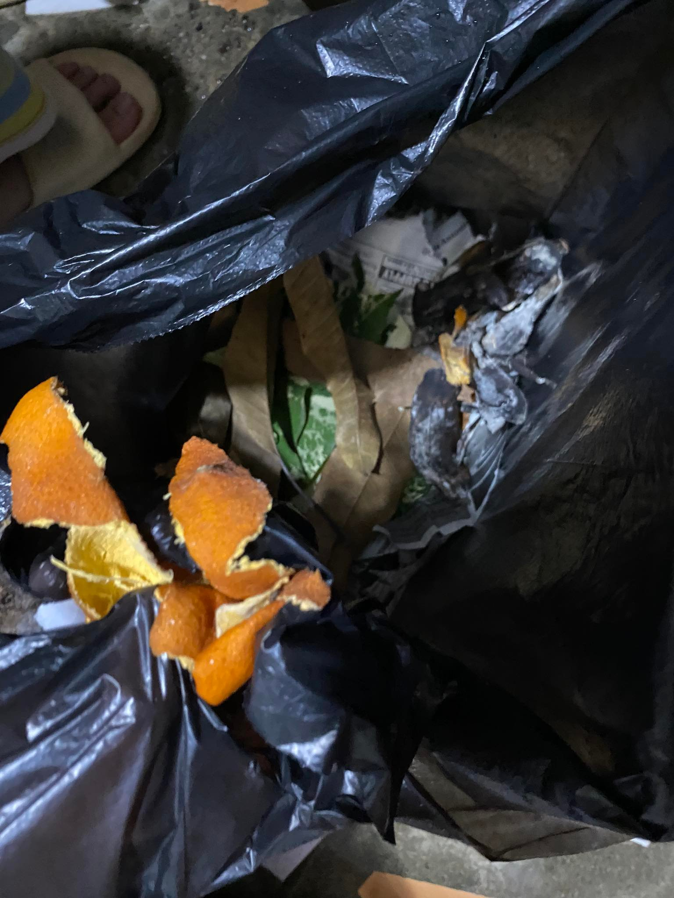
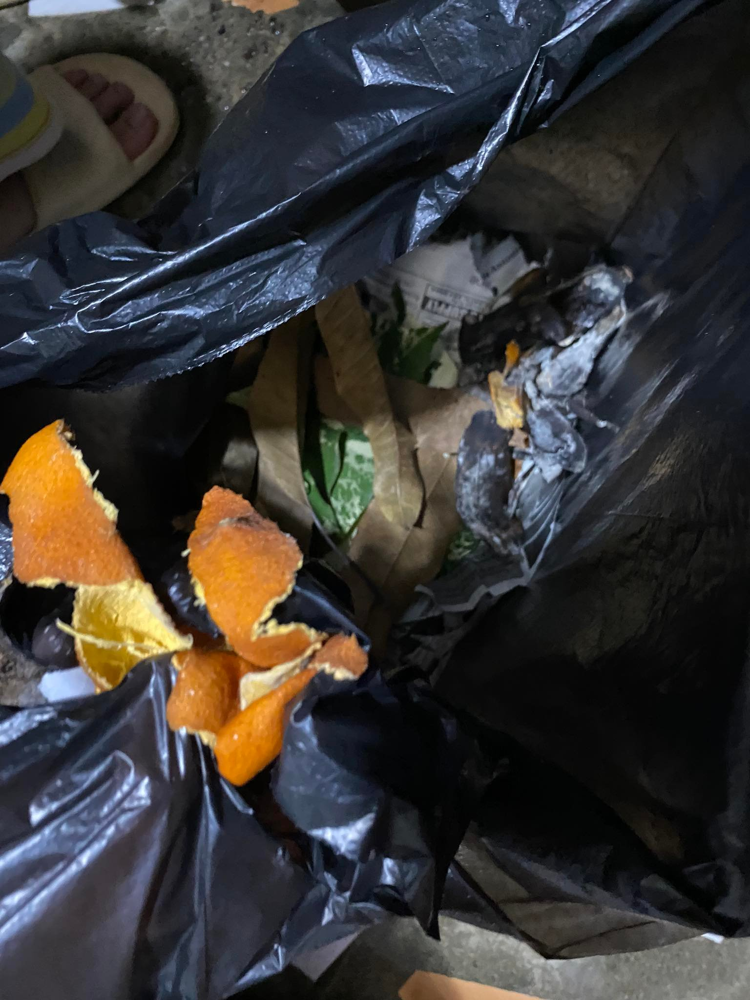
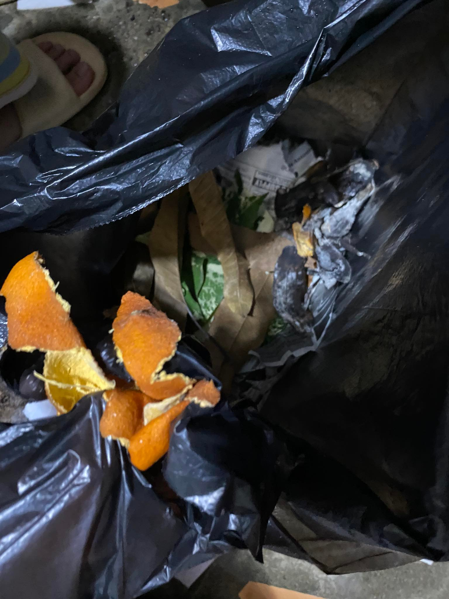

Documentation
Preparation of Materials
Composting
  

Composting is the process wherein organic matter is recycled to produce fertilizer; this enhances soil, helps in nutrient and moisture retention and the delivery of needed nutrients, and often controls pests and plant diseases (Composting At Home, 2022). Those mentioned above create an environment most suitable to grow a plant in as harmful chemicals, and factors are kept at bay while ensuring the thriving of beneficial bacteria. Composting is a way to a cleaner and safer environment for populations to live in.
In a paper by Nicolopoulou-Stamati et al. (2016) it is mentioned that chemical pesticides may have unidentified negative health effects due to the combination of elements that have potentially cancer-causing or endocrine-disrupting properties. According to another paper, pesticides, which both increase yield and get rid of pests, seriously endanger both the environment and people, as they degrade the soil and water quality, which has a dangerous impact on all living things, including animals, plants, and people (Rani et al., 2021). These show the disadvantages of using chemical pesticides. These prove that composting may open a way to reduce the demand and presence of chemical fertilizers and pesticides, all of which can cause harm to an individual, a whole community, and the environment. Most importantly, composting provides nutrient-rich and healthy soil, which helps improve food production, providing more nutritious produce for the consumption of families and communities, and other creatures.
Composting has many advantages for our partner institution, Talikala Inc., as it opens avenues for business, environmental and societal purposes. A business can arise from composting as the beneficiaries, with the institution, can utilize this to sell the compost itself and or use it to produce better yield, like plants and crops, which are profitable. A business like selling organic produce can help individuals fully or partially sustain themselves financially. Crops planted can also aid in situations where there may be food scarcity in and beyond the institution. Facing environmental purposes, individuals can benefit from compost by letting plants get their needed nutrients without receiving and letting out harmful chemicals to communities and the environment. The mentioned show how important using organic compost could be especially in this time of mass production where quantity is usually concentrated on rather than quality, potentially harming consumers.
Composting is the primary subject that drives this experiment. Compost would not only economically and socially assist Talikala INC., but it would also aid in creating a less contaminated environment where many organisms can grow and thrive; an environment where both people and other life forms could survive. This experiment involving composting will help us gain knowledge and arrive at a conclusion that is beneficial inside and outside the range of our community and partner institution. Therefore, it aids in the dissemination of knowledge that is advantageous to all.
What are the effects of different ratios of green to brown compost material on the length and speed of growth of the tomato plant?
If a ratio of 50:50 green to brown compost material is used, the compost will help the tomato plant grow longer.
Ratio of green to brown compost material
Length of tomato plant
Speed of growth of the tomato plant
In the control setup there will be 500 grams of loam soil, 350 ml of tap water, four banana and orange peels, 10 large freshly cut leaves, 4 sheets of newspaper, and 10 large dried leaves for each replicate. It is the control set up, meaning it has the hypothetically recommended ratio of green to brown compost material.
In the control setup there will be 500 grams of loam soil, 350 ml of tap water, four banana and orange peels, 10 large freshly cut leaves, 8 sheets of newspaper, and 20 large dried leaves for each replicate. It is the experimental set up, meaning it doesn’t have the hypothetically recommended ratio of green to brown compost material. There was a change in the ratio of green to brown compost material from (50:50 to 50:60) meaning the amount of brown compost material doubled.
Lorenzoe Roi L. Libang is a ninth-grade student at Ateneo de Davao University since 2012. He loves to play any kind of sports the same way with listening in music. He likes to go to places with friends using bikes. He studies and worked hard to become a civil engineer. He is well mannered and Christ centered.
BACK TO TOP